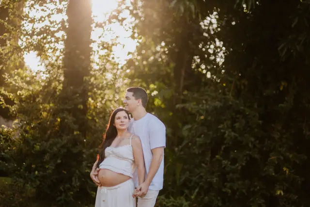

A espera
O ventre, o olhar de quem ainda está imaginando o rosto. É a única fase em que vocês já são três e ninguém ainda se viu.
Condução passo a passo, consultoria prévia de roupas e pausas tranquilas — ninguém precisa saber posar.
Conversar sobre ensaio de gestante →